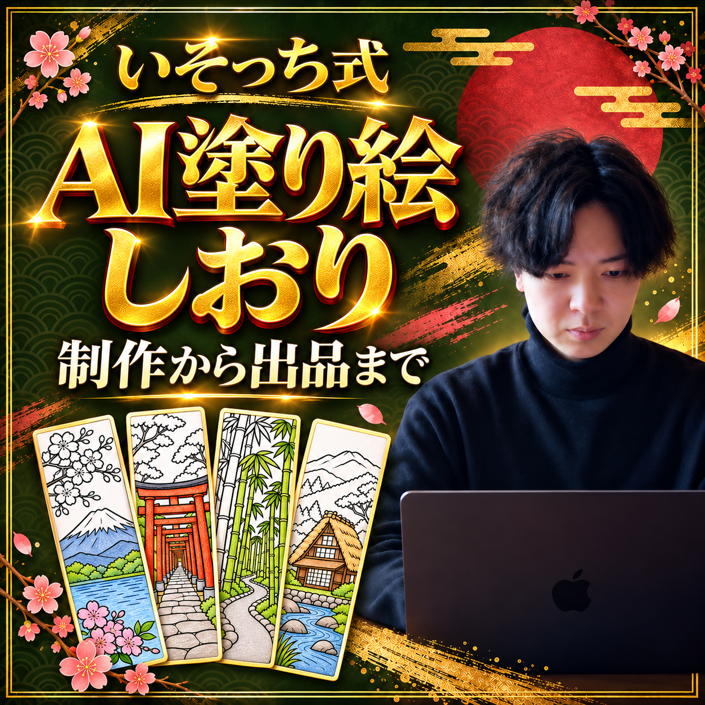
解説動画
動画を受け取り次第、掲載します。
AI副業、何を作るかで止まってませんか？
この特典では、日本の風景を4柄のしおりにして、英語の商品原稿と出品用データまでそろえます。
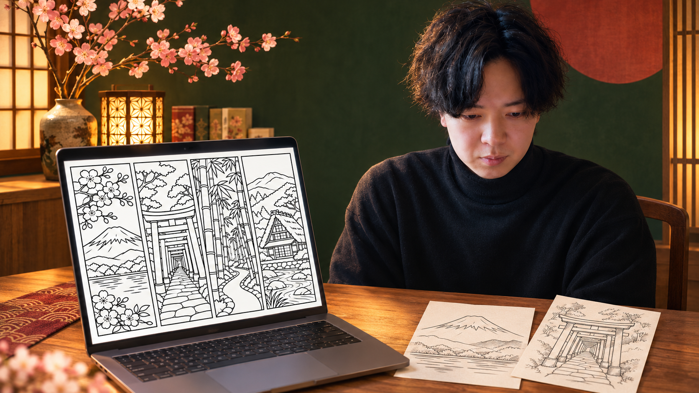
僕がおすすめしてるのは、日本らしい風景。日本好きの海外客を想定して、富士山・鳥居・竹林・合掌造りを選びます。
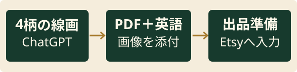
1 塗り絵の線画を作る
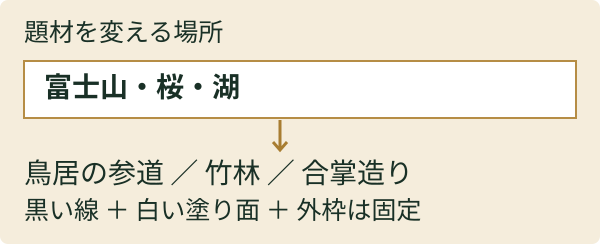
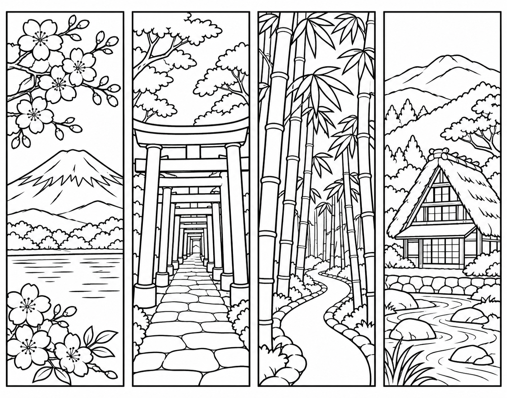
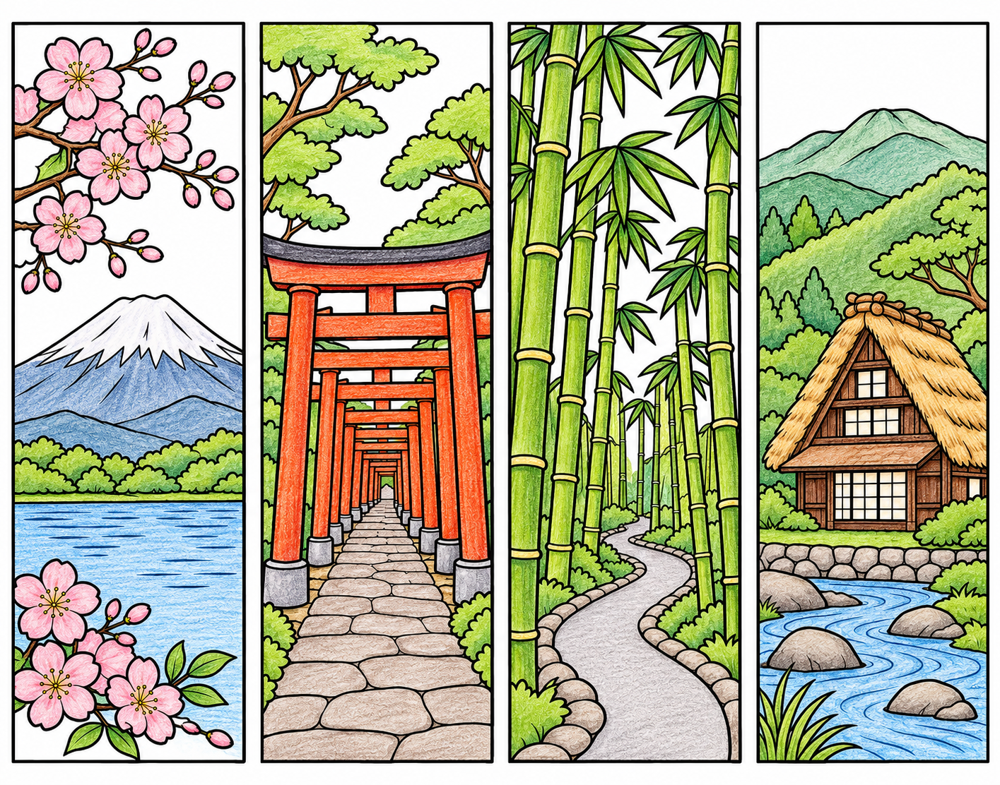
ChatGPTの画像作成で下の指示文を送信。外枠と塗り面を見て、気になる部分だけ直します。
線画の指示文
日本の風景をテーマに、大人向けの塗り絵しおり用の線画を作ってください。 1枚の横長画像に、縦長のしおりを4柄、等間隔で横に並べてください。 左から、①富士山・桜・湖 ②鳥居が続く石畳の参道 ③小道のある竹林 ④川沿いの合掌造りの家・木々・山。 黒い輪郭線と白い塗り面だけ。色・グレー・影・文字・ロゴ・透かしは入れないでください。 各柄を四角い外枠で囲み、端の線や絵が切れないように余白を取り、塗れる広さを残してください。 既存作品・キャラクター・ロゴを模倣せず、新しい構図にしてください。 これは実際の場所の写真ではなく、日本らしい風景のイラストです。
気になる一部分を直す
この線画の【直したい柄・箇所】だけを直してください。 問題：【線が途切れている／塗り面が狭すぎる／外枠が切れている等】。 他の柄・構図・順番は変えず、黒線と白い塗り面を保ってください。
作り始める前に
画像作成が使えるChatGPTへサインインして使います。機能・上限はプランやアカウントで異なります。生成結果は毎回変わります。
自分で撮った写真を使うなら、権利や写り込みを確認して添付し、「この風景を黒線と白い塗り面へ」と具体的に指定します。この作例は写真を元にした写実ではなく、AIで制作した風景イラストです。
4柄の数と順番、線の途切れ、塗り面の細かさ、外枠の切れを確認。特定作品やロゴの模倣は避け、題材と構図は自分で選びます。
2 PDFと英語原稿にする
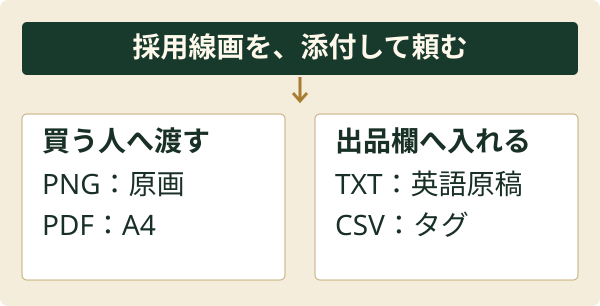
採用線画を添付し直して依頼。完成した添付を1つずつ保存し、PDFを開いて4柄が残っているか確認します。
PDF・英語原稿の指示文
添付した採用線画を使い、次の4ファイルを個別の添付ファイルとして作ってください。 画像を描き直したり、柄の数・順番・余白を変えたりしないでください。 1. bookmarks.png：添付した線画そのもの。 2. bookmarks_A4.pdf：A4縦1ページ。画像を横180mmで比率を保って配置。英語で「A4・100% / Actual Sizeで印刷、色を塗って外枠で切る」と短く記載。 3. etsy_listing_en.txt：英語の商品名・説明文。4柄の内容、PDFとPNG、デジタルのみ・実物の発送なし、印刷条件、AI使用、個人利用の範囲を明記。未確認の実寸・品質保証・売上は書かない。 4. etsy_tags_13.csv：英語タグ13個。各20文字以内。1列、見出しtag。 日本語で、ファイル数・柄数・説明と実物の一致を報告してください。 ファイルを作れない場合は、その旨を明記。存在しないダウンロードリンクは出さないでください。 Etsyへのログイン・登録・出品・公開・課金はしないでください。
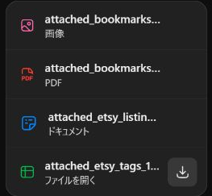
英語原稿の完成例
TITLE Japan Coloring Bookmarks, 4 designs, A4 PDF + PNG, digital download DESCRIPTION Color four Japanese landscape bookmarks with black outlines and white coloring areas. The designs appear together in this order: 1. Mount Fuji, cherry blossoms and a lake 2. A torii-lined stone approach 3. A bamboo grove with a winding path 4. A gassho-zukuri house beside a stream, with trees and mountains DIGITAL DOWNLOAD ONLY No physical product or art supplies will be shipped. INCLUDED BUYER FILES - attached_bookmarks.png: one PNG sheet containing all 4 designs (1415 x 1112 pixels). - attached_bookmarks_A4.pdf: one A4 page (210 x 297 mm) with the complete image placed at 180 mm wide, preserving its original aspect ratio, plus a short English printing instruction. PRINTING Print the PDF on A4 paper at 100% / Actual Size; disable Fit to Page. Color the white areas, then cut along the borders. Use paper or cardstock compatible with your printer. The PNG is an artwork sheet, not an A4-sized page. Individual bookmark dimensions are not specified. Print quality depends on your printer, paper and settings. AI DISCLOSURE The artwork was created using generative AI. The supplied artwork has been retained without redrawing, retouching or rearranging the four designs for this edition. PERSONAL USE For personal use only. Do not resell, redistribute or share the digital files, or sell prints made from them. TAGS (13) coloring bookmarks, japan bookmarks, printable bookmarks, japanese landscape, mount fuji coloring, sakura bookmark, torii gate art, bamboo coloring, gassho house, adult coloring, DIY bookmarks, digital download, AI generated art
ZIPを展開し「ガイド.html」から開けます。
個別に開く・印刷する

PDFはA4・100% / 実際のサイズで試し刷り。ページに合わせる設定を切り、紙に収まるか、線が塗りやすいかを確認してから商品説明を確定します。作例の印刷品質はプリンター・紙・設定で変わります。
同梱作例は学習・個人利用向けです。そのまま再配布・販売せず、自分の題材と構図で作品を作ってください。
3 Etsyの出品欄へ分ける
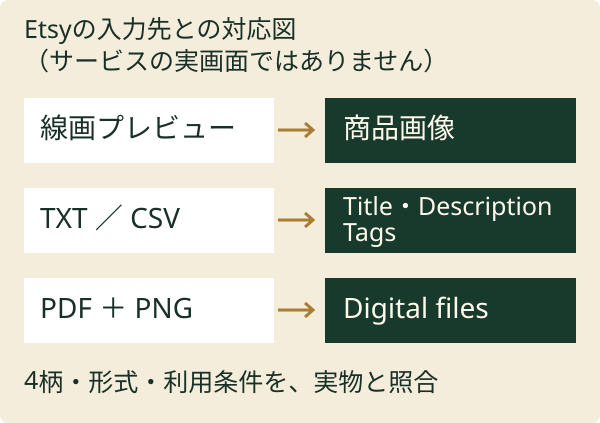
商品画像は、買う人が受け取る線画を見せます。彩色見本を使うなら、未彩色データとの違いも分かるように。
出品前の操作と確認
- EtsyのShop Manager → Listings → Add a listingを開き、商品種別はDigital filesを選びます。ショップ開設が必要な人は、登録条件・手数料を公式案内で確認します。
- 商品画像へ採用線画のプレビューを置き、TXTの商品名・説明とCSVのタグを各欄へ入力。PDFとPNGだけを購入者用ファイルとして添付します。
- 4柄の内容、デジタルのみ、発送なし、AI使用、個人利用、印刷条件が実物と一致するか見直します。価格・税・手数料も確認し、自分の判断で公開へ進みます。
デジタルファイルは最大5個・各20MB。AI使用は説明内でも開示します。今回のPDF約2.3MB、PNG約2.6MBは上限内です。
実編集画面はアカウントごとに表示が異なります。掲載前に現在の公式手順と画面の案内を確認してください。
寝る前に、まとめて頼む
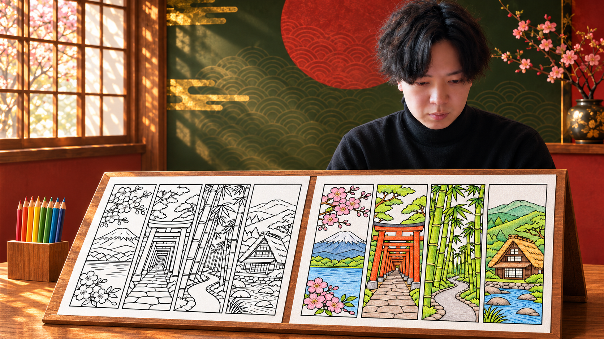
まずは採用画像からPDF・英語まで、一回まとめて頼んでみて。出力をそろえてから、自分の目で確かめます。
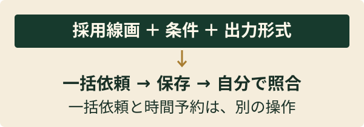
まとめて任せる指示文
添付した線画を採用版として、画像の保存、A4 PDF、英語商品名・説明、13タグまでをまとめて進めてください。 条件：4柄の内容・順番を固定。画像の描き直しなし。A4 PDFは横180mmで比率保持。英語原稿はデジタルのみ・実物発送なし・AI使用・個人利用を明記。 最初に不足を確認し、不足がなければ途中の確認を増やさず制作してください。ファイルはPNG / PDF / TXT / CSVの個別添付で渡してください。 最後に、①できたファイル ②内容の照合結果 ③人が確認すること ④できなかったこと、を短くまとめてください。 勝手な公開・出品・課金はしないでください。できない処理は別の処理へ置き換えず報告してください。
時間予約で動かしたいとき
上の指示文だけでは予約になりません。まず通常チャットで最後まで通る条件を固めます。
- 成功した依頼文を添えて「毎晩23時、Asia/Tokyoで、このチャットの作業を行う予約を作って」と依頼します。
- 作成確認の対象チャット・時刻・タイムゾーン・実行内容を見直します。Scheduledでタスクが見えることも確認します。
- 最初の実行結果を開き、4添付と内容を照合。失敗や確認待ちなら依頼文・使える機能を見直してから繰り返します。
画像作成・添付参照・ファイル出力の可否は、環境やタスクで異なります。使えない処理は通常チャットで行います。出品・公開・課金まで任せず、人が確認する所を依頼文に残してください。
OpenAI公式：Scheduledの作り方まずは4柄を、1セット。
線画・PDFが開く。英語と中身が合っている。ここまでそろったら、まず一度試し刷りしてみて。
この4柄をどう見せて販売するか。繰り返す作業をどこまで任せるか。AI画像の販売方法・面倒な作業の自動化・収益化のノウハウは、僕の公式LINEで無料で受け取れます。
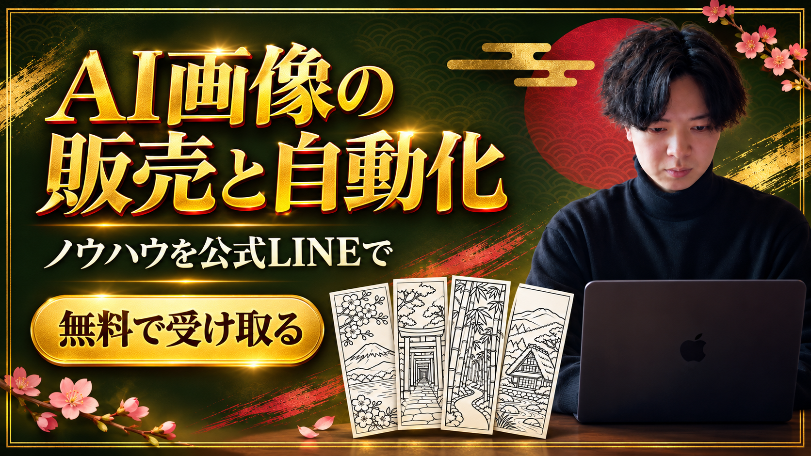